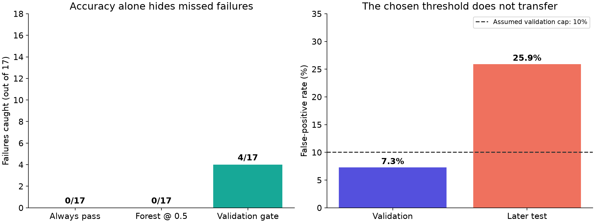

| Policy | Caught | False alarms | Missed | Accuracy | Recall |
|---|---|---|---|---|---|
| always_pass | 0 | 0 | 17 | 94.6% | 0.0% |
| forest_0.5 | 0 | 0 | 17 | 94.6% | 0.0% |
| validation_gate | 4 | 77 | 13 | 71.3% | 23.5% |
The gate flags 81 records, of which only 4 fail. Balanced accuracy is 48.8%, versus 50% for always-pass. This is not a deployable solution.

Train on the earliest 940 records, select a threshold on the next 313, test on the latest 314. The training-only median imputer precedes 500 Random Forest trees (maximum 16 leaves, seed 42). No test-driven tuning.
Validation: 1/11 failures caught and 22/302 passes flagged (7.3%). Test: 4/17 caught and 77/297 passes flagged (25.9%). Threshold: 0.102863.
Recall 95% Wilson interval: 9.6–47.3%. False-positive rate: 21.3–31.2%. Intervals assume independent records. No demonstrated causal explanation, advance-warning horizon, or financial savings.
Aurélien Géron, Hands-On Machine Learning with Scikit-Learn, Keras, and TensorFlow, 2nd edition: p.199 Random Forest, pp.96–97 thresholds, p.67 median imputation. Original adaptation to UCI SECOM, McCann & Johnston (2008), CC BY 4.0.
Local data contains 590 sensor columns; UCI's prose describes 591 features. Timestamp is stored separately. We report the actual parsed shape.
from pathlib import Path
import json
import numpy as np
import pandas as pd
from sklearn.ensemble import RandomForestClassifier
from sklearn.impute import SimpleImputer
from sklearn.pipeline import make_pipeline
from sklearn.metrics import confusion_matrix, average_precision_score
root = Path(__file__).resolve().parent
X = np.loadtxt(root / 'data/secom.data')
labels = pd.read_csv(root / 'data/secom_labels.data', sep=r'\s+', header=None)
dates = pd.to_datetime(labels[1], format='%d/%m/%Y %H:%M:%S')
order = np.argsort(dates.to_numpy(), kind='stable')
X, y, times = X[order], (labels[0].to_numpy()[order] == 1).astype(int), dates.to_numpy()[order]
n = len(y)
a, b = np.searchsorted(times, times[[int(n * .6), int(n * .8)]], side='left')
train, valid, test = np.arange(a), np.arange(a, b), np.arange(b, n)
model = make_pipeline(SimpleImputer(strategy='median', keep_empty_features=True),
RandomForestClassifier(n_estimators=500, max_leaf_nodes=16, random_state=42, n_jobs=1))
model.fit(X[train], y[train])
validation_scores = model.predict_proba(X[valid])[:, 1]
candidates = np.r_[np.unique(validation_scores), np.nextafter(validation_scores.max(), np.inf)]
choices = []
for threshold in candidates:
tn, fp, fn, tp = confusion_matrix(y[valid], validation_scores >= threshold, labels=[0, 1]).ravel()
if fp / (fp + tn) <= .10:
choices.append((int(tp), -int(fp), float(threshold)))
threshold = max(choices)[2]
scores = model.predict_proba(X[test])[:, 1]
policies = {'always_pass': np.zeros(len(test), bool), 'forest_0.5': scores >= .5,
'validation_gate': scores >= threshold}
rows = []
for policy, predictions in policies.items():
tn, fp, fn, tp = map(int, confusion_matrix(y[test], predictions, labels=[0, 1]).ravel())
rows.append(dict(policy=policy, tn=tn, fp=fp, fn=fn, tp=tp,
recall=tp/(tp+fn), precision=tp/(tp+fp) if tp+fp else 0., fpr=fp/(fp+tn),
alert_rate=(tp+fp)/len(test), accuracy=(tp+tn)/len(test),
balanced_accuracy=(tp/(tp+fn)+tn/(tn+fp))/2))
out = root / 'results'
out.mkdir(exist_ok=True)
pd.DataFrame(rows).to_csv(out / 'metrics.csv', index=False)
pd.DataFrame(dict(original_row=order[test], timestamp=times[test], fail=y[test],
score=scores, flagged=scores >= threshold)).to_csv(out / 'predictions.csv', index=False)
summary = dict(rows=n, sensors=X.shape[1], total_failures=int(y.sum()), threshold=threshold,
split_sizes=[len(z) for z in (train, valid, test)], split_failures=[int(y[z].sum()) for z in (train, valid, test)],
average_precision=float(average_precision_score(y[test], scores)), test_prevalence=float(y[test].mean()),
validation_tp=max(choices)[0], validation_fp=-max(choices)[1])
(out / 'summary.json').write_text(json.dumps(summary, indent=2), encoding='utf-8')
print(json.dumps(summary, indent=2))
print(pd.DataFrame(rows).to_string(index=False))
github.com/sravanni369 • linkedin.com/in/lakshmi-sravani-p-212899272